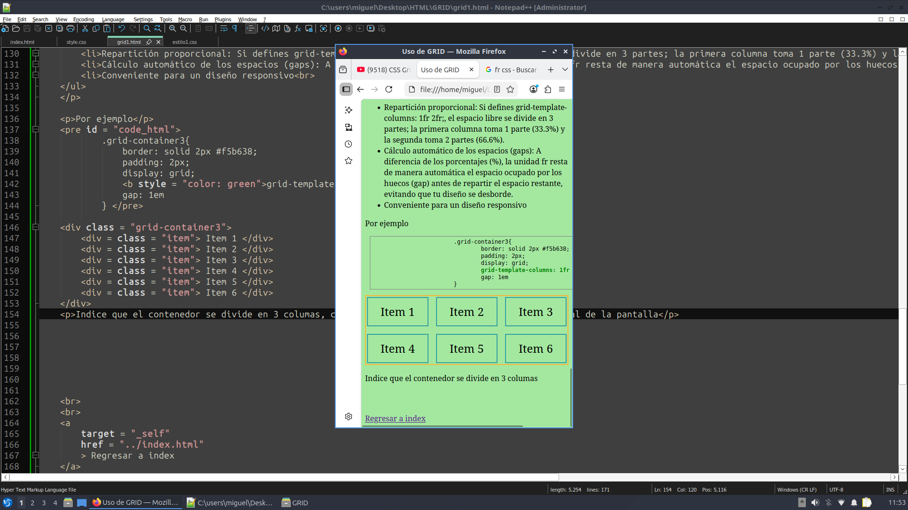
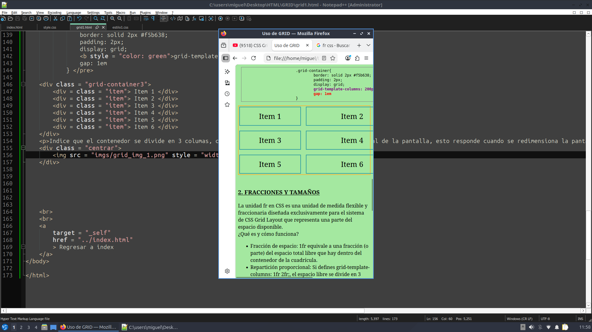

GRID Comenzamos poniendo varias divisiones dentro de un contenedor de la siguiente manera:
< div class = "grid-container"> < div = class = "item"> Item 1 < /div> < div = class = "item"> Item 2 < /div> < div = class = "item"> Item 3 < /div> < div = class = "item"> Item 4 < /div> < div = class = "item"> Item 5 < /div> < div = class = "item"> Item 6 < /div> < /div>
.grid-container{
border: solid 2px #f5b638;
padding: 2px;
display: grid;
}
Y se ve de la siguiente manera:
Para usar grid debemos de escribir display: grid;
Con GRID se puede definir en cuantas columnas o filas se van a disponer los elementos de un contenedor declarando como se muestra a continuación, y tambien el ancho y alto de filas y columnas.
grid-template-columns: [] [] [] []... ;
grid-template-rows : [] [] [] []... ;
Por ejemplo, deseamos poner tres columnas, la primera de 200px, la segunda de 100px, y la tercera de 200px:
.grid-container{
border: solid 2px #f5b638;
padding: 2px;
display: grid;
grid-template-columns: 200px 100px 200px;
}
Añadiendo también variaciones a las filas (rows)
.grid-container{
border: solid 2px #f5b638;
padding: 2px;
display: grid;
grid-template-columns: 200px 100px 200px;
grid-template-rows: 100px 150px;
}
gap: [unidad_medida]; (ej: 1em)
Sirve para dar espacio entre los elementos de filas y columnas
.grid-container{
border: solid 2px #f5b638;
padding: 2px;
display: grid;
grid-template-columns: 200px 300px;
gap: 1em
}
La unidad fr en CSS es una unidad de medida flexible y fraccionaria diseñada exclusivamente para el sistema de CSS Grid Layout que representa una parte del espacio disponible.
¿Qué es y cómo funciona?
Por ejemplo
.grid-container3{
border: solid 2px #f5b638;
padding: 2px;
display: grid;
grid-template-columns: 1fr 1fr 1fr;
gap: 1em
}
Indice que el contenedor se divide en 3 columas, cada una de exactamente 1 una fracción del total de la pantalla, esto responde cuando se redimensiona la pantalla


Note que siempre conserva un tamaño proporcional
Tambien aplica modificando a diferentes fracciones usando grid-template-columns: 0.5fr 1fr 2fr;
Corresponden al 1% de la dimensión más pequeña de la ventana gráfica (viewport), ya sea su ancho o su alto
Qué son las unidades de Viewport
No confundir con:
• 100% (Porcentaje): Depende del contenedor padre. Si el padre mide solo 300px, el elemento medirá 300px.
• 100vw / 100vh (Viewport): Depende de la pantalla. No le importa cuánto mida el padre; se estirará para ocupar toda la ventana del navegador.
Note que con esto se puede establecer que un elemento o contenedor puede ocupar un porcentaje CON RESPECTO A LA PANTALLA.
Observe el siguiente diseño:
.grid-container4{
border: solid 2px #f5b638;
padding: 2px;
display: grid;
grid-template-columns: 100px 100px 100px;
grid-template-rows: 100px 100px 100px;
gap: 1em
}
.item4{
border: solid 1px blue;
padding: 0.01em;
text-align: center;
width: 50px;
height: 50px;
}
El contenedor tiene celdas de 100px de alto y 100 px de largo, además hay un espacio entre estas celdas definido por gap: 1em
Los cuadrados (item4) tienen un tamaño fijo en pixeles de 50px de alto y 50px de largo, lo que significa que no ocupan todo el espacio disponible que les ofrece su contenedor padre.
Ahora todos los cuadrados están alineados a la izquierda por defecto.
Para controlar el posicionamiento de los objetos dentro de estos espacios podemos usar lo siquiente:
- justify-items : Alinear horizontalmente
- align-items : Alinear verticalmente
Para controlar el posicionamiento del objeto respecto a su contenedor (por ejemplo centrar en la pantalla):
- justify-content : Alinear horizontalmente
- align-content : Alinear verticalmente
Ambas configuraciones pueden tomar uno de los 3 parámetros:
.grid-container4{
border: solid 2px #f5b638;
padding: 2px;
display: grid;
grid-template-columns: 100px 100px 100px;
grid-template-rows: 100px 100px 100px;
gap: 1em
}
.item4{
border: solid 1px blue;
padding: 0.01em;
text-align: center;
width: 50px;
height: 50px;
}